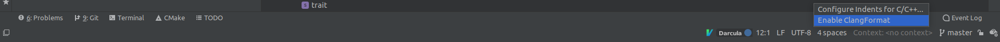

О курсе
Данный курс читается студентам кафедры КТ в университете ИТМО.
Лектор — Иван Сорокин @vanyacpp
Преподаватели практики и контакты:
- Лев Довжик @Dogzik
- Артём Котóн @dedlocc
- Иван Медведев @spcc02
- Николай Черкашин @nikkirche
- Максим Мурысин @murysinm
- Егор Шамшура @egorcpp
- Григорий Сосновцев @hyperb0rean
- Егор Туисов @egaegaeg
- Алексей Заречнев @stratocasster
Организационные вопросы
- Telegram Chat — можно получить у преподавателей. Там можно найти все объявления и актуальные ссылки, а также задавать вопросы
- Twitch — стримы лекций
- YouTube — записи лекций
- cpp-notes — конспекты студентов прошлого года. Приветствуются (и поощряются бонусными баллами) правки и дополнения
Баллы
Подробнее о балльно-рейтинговой системе:
- Оценка состоит из ваших баллов за практические, домашние задания и экзамен.
- Без успешной сдачи экзамена вы не можете получить положительную оценку (то есть, выше FX), иначе говоря:
auto score = practice + hw + exam;
auto bars = (exam > 0) ? score : std::min(score, 59);
// bars -> bars.itmo.ru
- При необходимости система может меняться в течение семестра в любую из сторон.
Разбалловка
- Практические задания — 25 баллов.
- Домашние задания — 50 баллов.
- Экзамен — 25 (+5) баллов.
- Итого 105 баллов. В оценку переводятся в соответствии с БаРС.
Практические задания
Несколько небольших заданий, о которых вам расскажут преподаватели на отдельной паре, напишут какую-то часть кода, ответят на вопросы. Выполняются обычно за 3-7 дней, отправка любых посылок по практикам после дедлайна (т.е. с положительной просрочкой, см. про неё ниже) невозможна (исключение: доп. сессия).
Домашние задания
Задания, которые будут выдавать в течение семестра для полностью самостоятельного выполнения. Для каждой будет отдельный дедлайн, за просрочку которого будет штраф на количество баллов за задачу.
Система оценивания заданий
Оценки за задания для простоты переведены в символьную систему:
| Symbol | Description | Score |
|---|---|---|
| + | Задание выполнено | 1 |
| +- | Есть недочёты | 0.8 |
| -+ | Много недочётов | 0.6 |
| - | Плохо | 0 |
| / | Не проверялось | 0 |
Оценку / можно получить, например, за проблемы оформления или непройденные тесты.
Баллы за ДЗ считаются по формуле: \[ h = S \cdot M_h \cdot \left(0.6 + \frac{0.4}{1 + 0.35 \cdot D} \right)\] \[ D = \left\lceil \frac{d}{3} \right\rceil \]
- \( M_h \) — максимальный балл за задачу
- \( S \) — ваша оценка за задачу
- \( d \) — кол-во дней, на которые просрочен дедлайн
Штрафы распространяются на любые просроченные посылки, даже правки. Штрафа на количество посылок нет. Итоговым баллом за задание служит максимум из баллов за соответствующие посылки.
Дедлайн для каждого задания задаётся в виде двух составляющих:
- Время и дата дедлайна сдачи (
D_сдачи) - Количество дней на правки (
D_правок)
Просрочка (d) — это просрочка первой сдачи по сравнению с D_сдачи, плюс накопленная просрочка правок, превышающая D_правок. Дни правок тратятся на время внесения правок, только если оно происходит после D_сдачи.
Сдать ДЗ с первого раза скорее всего не получится, и это нормально. Мы все тут ещё учимся.
Проверка занимает достаточно ненулевое время. Чаще всего чем ближе дедлайн, тем больше время проверки в силу увеличивающейся очереди посылок. Рекомендуется сдавать как можно раньше, чтобы получить больше шансов на проверки правок до дедлайна.
Пример. Пусть дано домашнее задание, которое оценивается при полном выполнении в 10 баллов. В таблице ниже отражено поведение формулы для рассчёта баллов для первой посылки (сдачи) в зависимости от переменных. Пусть дедлайн заканчивается 1 марта, 23:59. Тогда:
| Timestamp \ Symbol | + | +- | -+ | - |
|---|---|---|---|---|
| 1 марта, 23:59 | 10 | 8 | 6 | 0 |
| 2 марта, 00:00 | 8.96 | 7.17 | 5.38 | 0 |
| 4 марта, 23:59 | 8.96 | 7.17 | 5.38 | 0 |
| 5 марта, 00:00 | 8.35 | 6.68 | 5.01 | 0 |
| 20 апреля, 12:00 | 6.58 | 5.26 | 3.95 | 0 |
| 1 сентября, 12:00 | 6.18 | 5.07 | 3.71 | 0 |
Экзамен
Состоит из практической и теоретической частей.
- В практической части вам даётся задание, по сложности сопоставимое с типичной практикой, но для самостоятельного выполнения в течение нескольких часов. Задание оценит преподаватель. Баллы за эту часть экзамена не выставляются, но её успешная сдача является необходимой для допуска к теоретической части.
- В теоретической части экзамена вы отвечаете на вопросы по курсу. Результат — до 25 баллов (+20%, если практическая сдана на “+”).
- Чтобы получить положительную оценку за курс, нужно успешно сдать каждую из частей экзамена.
- Подробнее о формате экзамена и пересдач напишем ближе к началу сессии.
Бонусные баллы
В дополнение к основным способам набора баллов, вы можете получать бонусные баллы за активности, направленные на развитие нашего курса или C++ в целом, в том числе:
- Доработка тестов
- Поддержка и актуализация конспектов (cpp-notes)
- Решение открытых issues в наших публичных репозиториях
- Нахождение новых багов в компиляторах/санитайзерах/форматтерах/стандарте C++ и оформление их в issues на официальных баг-трекерах
- Принятые контрибьюты, в том числе исправления багов, в репозиториях вышеупомянутых инструментов
- Другие активности или особенно хорошо выделившиеся решения, на усмотрение преподавателей
Настройка окружения
IDE
Вы можете использовать IDE по вкусу для выполнения практик/домашних заданий.
Но чтобы ваш код был в определенном стиле и при написании кода вы быстро увидели опечатки/минорные баги — вам предоставлены .clang-tidy и .clang-format файлы в репозиториях.
В подразделах описаны этапы конфигурации некоторых IDE (рекомендуется CLion).
Также рекомендуем присмотреться к запуску тестов в Docker-контейнерах, использующихся в CI, и уже содержащих все нужные части тулчейна нужных версий. Найти их и информацию о том, как ими воспользоваться, можно тут.
Vcpkg
В некоторых заданиях для управления зависимостями (например, фреймворки для юнит-тестирования) мы используем пакетный менеджер vcpkg.
Вам не требуется его устанавливать самостоятельно, это происходит в рамках конфигурации CMake-проекта. Однако у него есть некоторые зависимости, которые должны быть установлены в вашей системе.
Например, на Ubuntu их можно установить следующей командой:
apt install git curl zip unzip tar pkg-config
CMake Presets
В большинстве репозиториев этого курса для организации проекта используется CMake и пресеты сборки для него (указаны в CMakePresets.json в корне репозитория).
Выбор пресета позволяет выбрать режим сборки и установить типичный для него набор флагов и опций.
При ручном использовании CMake, пресет нужно задать флагом --preset на этапе конфигурации, например:
# Configure CMake
cmake -S . --preset Default-Debug
# Build
cmake --build build/Default-Debug -j
# Run tests
build/Default-Debug/tests
Локальное окружение на Windows (WSL) для домашних заданий и практик
Данный гайд предназначен для людей с Windows, которые хотят пользоваться преимуществами Linux (например, edb-debugger).
Требования к Windows
Использовать данные фичи можно только на Windows 10 Build 19044+ или Windows 11. Если у вас версия Windows меньше 10, то к сожалению данный способ для вас недоступен. В случае если у вас Windows 10, рекомендуется обновить её до последней версии.
Также необходимо иметь драйвера последней версии.
Установка WSL и Ubuntu
Для того чтобы установить wsl, нужно воспользоваться командой:
wsl --install -d <DistributionName>
Рекомендуется устанавливать Ubuntu-22.04 (или новее). Так вы с меньшей вероятностью столкнётесь с невозможностью установить пакет достаточно новой версии. Список доступных для установки дистрибутивов можно посмотреть при помощи команды:
wsl --list --online
После установки нужно ввести wsl --update и wsl --set-default-version 2.
Сразу после рекомендуется перезагрузить компьютер.
После этого вы можете найти в поисковой строке Ubuntu и запустить её. Понадобится некоторое время на предварительную инициализацию.
Первый вход в Ubuntu, обновление и установка нужных утилит
При первой загрузке Ubuntu вам предложат придумать себе логин и пароль. Пароль надо запомнить, так как он понадобится для работы в привилегированном режиме.
Далее обновим систему и пакеты при помощи команд:
sudo apt update && sudo apt upgrade
Тут у нас попросят sudo password. Это и есть тот пароль, который вы вводили при первой загрузке.
Если понадобится установить какой-то пакет (например, вы любите sublime text), то можно это сделать при помощи команды вида sudo apt install XXX, где XXX - имя нужного вам пакета.
Для практики по ассемблеру, вам понадобятся nasm и дебаггер edb, установите их при помощи следующей команды:
sudo apt install nasm binutils edb-debugger xterm
Для проверки работоспособности напишите edb в консоль, после чего он должен открыться в отдельном окне.
Полезные ссылки
Установка и настройка окружения на Mac для практик и домашних заданий на ассемблере x86_64
План действий эмуляции x86_64 и запуска edb-debugger и ассемблера.
Установка UTM и эмуляция x86_64
Необходимо скачать и установить UTM, а так же образ ubuntu, в целом можно и другой образ.
Далее добавляем виртуальную машину в UTM. Если у вас apple silicon, т.e. на архитектуре ARM, выбираем emulate. Если у вас mac на intel, можно выбрать любую опцию, но быстрее будет virtualize. После следуем по всем шагам установки и настраиваем под себя. Так же для более плавной работы в настройках виртуальной машины можно увеличить количество ядер и прожать опцию Force multicore.
Настройка ubuntu и установка утилит
Обновляем систему и пакеты
sudo apt update && sudo apt upgrade
Для практики по ассемблеру, вам понадобятся nasm и дебаггер edb, установите их при помощи следующей команды:
sudo apt install nasm binutils edb-debugger xterm
Для проверки работоспособности напишите edb в консоль, после чего он должен открыться в отдельном окне.
Если у вас вылез данный warning:
Warning: Ignoring XDG_SESSION_TYPE=wayland on Gnome. Use QT_QPA_PLATFORM=wayland to run on Wayland anyway.
Может помочь прописать:
export QT_QPA_PLATFORM=wayland
sudo apt install qtwayland5
CLion
Рекомендуется пользоваться EAP версией, ибо именно в ней все свежие фиксы и фичи.
Установка
На официальном сайте (ссылка в header-e - кликабельна) можно найти информацию об установке через Toolbox (если вы используете другие IDE от Jetbrains) или об установке на Windows.
На Ubuntu альтернативно доступна установка через snap, если вы хотите обновлять среду разработки через пакетный менеджер:
$ sudo apt install snap
$ sudo snap install clion --classic
clang-tidy
Clion имеет встроенный clang-tidy, но вы можете указать внешний, если он есть на вашей системе.
Нужно убедиться, что вы поставили галочку на
Prefer .clang-tidy files over IDE settingsчтобы использовать .clang-tidy курса.
Path: Settings / Preferences | Editor | Inspections - C/C++, General, Clang-Tidy

clang-format
Clion имеет встроенный (альтернативный) clang-format, но вы можете указать внешний, если он есть на вашей системе.
Нужно убедиться, что вы поставили галочку на
Enable ClangFormat (only for C/C++/Objective-Cчтобы использовать .clang-format курса.
Path: Settings / Preferences | Editor | Code Style - ClangFormat

Либо другой, более быстрый вариант. В нижней панели экрана, поставить соотвествующую галочку. 
Интеграция с CMake presets
При первом открытии проекта, содержащего файл CMakePresets.json, CLion сгенерирует вам профили сборки на основе CMake-пресетов (о них подробнее писали тут) и предложит активировать нужные.
Текущий профиль далее выбирается в правом верхнем углу, возле списка конфигураций запуска.
Если в какой-то момент вы захотите активировать или деактивировать какие-то профили, это можно сделать в File->Settings->Build,Execution...->CMake.

Если после добавления конфигураций CMake падает с ошибкой при попытке сконфигурироваться, и вы не понимаете, с чем она связана, есть следующие возможные шаги решения (применяйте до первого сработавшего):
Tools->CMake->Reload CMake Project;Tools->CMake->Reset Cache and Reload Project;- Удалить директорию
build(иcmake-build-*, если такие есть), после чего повторить п.2; - Обратиться за помощью к преподавателям курса.
Полезные ссылки
- Выбор конфигурации сборки. Чем сборка в дебаге отличается от сборки в релизе, рассказывают в 3 семестре на курсе операционных систем.
- Valgrind memcheck: проверки утечек памяти и т.д.
QtCreator
Установка
Есть мануал на официальном сайте (ссылка в header-e - кликабельна). Здесь можно найти offline установщики Qt (в который собственно и входит Creator) для Windows и Linux/MacOS.
На Ubuntu рекомендуется следующий процесс установки (чтобы можно было обновлять среду разработки через пакетный менеджер):
$ sudo apt install qtcreator
clang-tidy
QtCreator имеет встроенный clang-tidy, но вы можете указать внешний, если он есть на вашей системе.
Чтобы использовать .clang-tidy курса, к сожалению, нужно будет копипастнуть наш файлик в Edit checks as string (смотрите конец инструкции в header - e)
До настроек clang-tidy можно добраться через Tools -> Options -> Analyzer -> Diagnostic Configuration

Там нужно будет создать копию и нажать Edit checks as string, куда вставить содержимое нашего файлика.

clang-format
Для установки автоматического форматирования кода в QtCreator нужен плагин Beautifier. О том как его установить можно почитать по ссылке.
Рекомендуем поставить галочку на
Enable auto format on file save
После перезапуска QtCreator идем в Tools -> Options -> Beautifier -> ClangFormat. Если у вас не стоит clang-format, его нужно поставить, в Ubuntu это sudo apt install clang-format. Далее в Options в Use predefinde styles выбираем опцию File вместо LLVM

Инструкция по сдаче заданий
В рамках курса вам будут предложены домашние задания и практики. Сдача происходит с помощью Merge Request в GitLab.
Для работы с заданиями вам необходимо аутентифицироваться на https://gitlab.ct.itmo.ru через вашу учётную запись ITMO ID. В процессе нужно будет подтвердить почту — следуйте инструкциям.
После этого вам также необходимо настроить взаимодействие с репозиториями через SSH-ключи по инструкции от GitLab. В дальнейшем ВСЕ ссылки на репозитории, в частности для клонирования, должны быть в формате SSH.
Создание репозитория с заданием
- К каждому заданию будет приложена инвайт-ссылка для создания репозитория в GitLab, после перехода по ней у вас создастся приватный репозиторий со стартовым кодом, тестами и конфигурациями. Склонируйте его и выполняйте задания в ветке
solution. - Вместе с репозиторием автоматически создаётся Merge Request из ветки
solutionв веткуmaster.
Подтягивание новых тестов и других изменений
Иногда нам приходится править какие-то проблемы в конфигурациях или добавлять новые тесты. В этом случае изменения автоматически подтянутся в master ветку вашего репозитория на GitLab. При наличии конфликтов с веткой solution вы должны самостоятельно их разрешить.
Сдача
Для сдачи решения необходимо сделать следующее:
- Сделайте коммит(-ы) с вашим решением. Проследите, чтобы в коммит попали только файлы с решением (при необходимости можете дополнять .gitignore), а файлы с тестами не изменились.
- Перенесите решение в ветку
solution, если не делали сразу всё в ней. - Запушьте
solutionна удалённый репозиторий. - Откройте автоматически созданный Merge Request (MR) и удостоверьтесь, что тесты в тестирующей системе прошли (в MR появится зелёная галочка, также можно посмотреть подробности, нажав по ней).
- Также проверьте, что в MR нет конфликтов с веткой
master. При необходимости предримите действия для их разрешения (например,git rebase). - ВНИМАНИЕ! Ни в какой момент не нужно закрывать или мёрджить MR!
- Пришлите с помощью формы заявку на проверку с ссылкой на этот MR.
- В случае первой сдачи (или если все ваши сдачи были проверены на
/) выберите режимсдача, иначе —правки. - Дождитесь проверки. При наличии замечаний, исправьте их и повторите процесс. При этом изменения обязательно должны быть разбиты на отдельные коммиты, в соответствии с замечаниями (или группами тесно связанных замечаний), а не объединены все в одну “кучу”.
Процесс проверки
- В процессе проверки преподаватель будет оставлять комментарии в вашем MR. Комментарии — это замечания, которые нужно исправлять.
- Некоторые комментарии могут быть помечены
[note], их исправление необязательно — чаще всего это предложения альтернативных решений, иногда выходящих за рамки курса. - Закрывать (“resolve”) комментарии может только преподаватель.
- На каждый оставленный комментарий нужно ответить: либо кратко написать, как поправили (если комментарий однозначно указывает, как решить проблему — достаточно “fixed”), либо, если вы считаете, что замечание некорректно и вам не нужно ничего исправлять, обосновать это в ответе.
- Обратите внимание, что “fixed” хватает далеко не всегда. Часто у проверяющих возникают к вашему коду вопросы, на которые нужно ответить. Или же мы указываем на проблему в решении, которую можно адресовать множеством способов, в случае чего хочется знать, каким путём пошли вы.
- Задание считается полностью сделанным, только если не осталось ни одного неисправленного комментария кроме
[note]. - Не стоит посылать заявку на проверку правок до того, как вы исправили все замечания (или ответили на них).
- Любые коммиты, сделанные после посылки формы и до её проверки, делаются на ваш страх и риск, так как могут произойти уже после того, как преподаватель начал проверку.